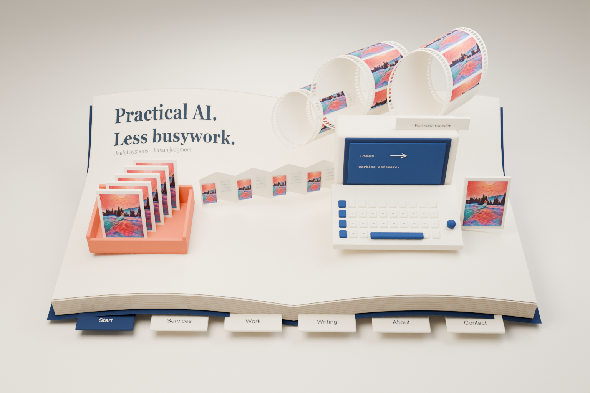
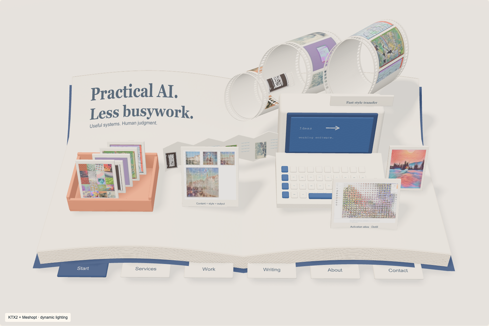

The original Cycles render and the optimized WebGL asset at the matching camera. WebGL uses fully dynamic lighting; color response, indirect light and contact shadows differ. No claim of exact parity or final owner acceptance.

